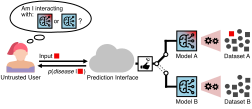
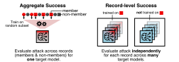

Nature · 2026 · Interactive companion
Disparate privacy risks from medical AI
A membership inference attack uses the outputs of a deployed model to answer one question about a patient: was this person’s data used to train it? For a model trained on a cancer cohort, a “yes” reveals a diagnosis. The study audited these attacks patient by patient across seven clinical datasets and found the risk is anything but evenly shared.
The attack
What is a membership inference attack?
Medical AI models are often deployed behind a prediction interface: you send in a patient’s data, such as a chest radiograph, and get back a prediction, such as a 78% chance of pneumonia. A membership inference attack needs nothing more than this access.

The attacker holds one patient’s record (the red square) and asks a single question: was this record in the model’s training data? Put differently, am I querying model A, trained with this patient’s data, or model B, trained without it? A model tends to output slightly higher confidence scores for data it was trained on. The attack compares the score the model outputs for the record with the scores that similar models, trained by the attacker, output for the same record, and turns that difference into a guess.
The guess alone can be sensitive. If a model was trained only on patients with cancer, learning that someone was in its training data reveals their diagnosis. One query is enough, so anyone posing as an ordinary user could run the attack, and federated learning offers no protection because the attack targets the finished model. Attack success is scored by AUC: 0.5 is a coin toss, 1.0 means the attacker is always right.
01 · Individual patients
Some patients are exposed almost perfectly; most are barely touched
Attack success is usually reported as one number for a whole dataset. That number sits close to 0.5, the score of random guessing, which suggests little risk. The study instead measured it record by record, using 200 models per dataset, each trained on a random half of the patients. A patient’s score is that of their most exposed record. Measured this way, a small tail of patients can be identified with near certainty.

Whole-dataset attack AUC
–
0.5 is random guessing
Essentially unaffected
–
of patients with AUC below 0.6
At or above the threshold
–
Show as table
02 · Patient groups
Groups that are rare in the training data are overrepresented among the most vulnerable
The authors took the 1% of records most exposed to the attack and compared who they belong to with the training data as a whole. If risk were shared evenly, every group would make up the same share of both. It does not: small groups, stratified by disease, self-reported race, insurance, sex or imaging protocol, tend to show up far more often than their size predicts.
Show as table
About the data
Patient-level scores are the highest record-level attack AUC among each patient’s records, estimated from 200 target models per dataset (likelihood-ratio attack, residual networks with about 1.5 million parameters). Whole-dataset scores are the mean aggregate LiRA AUC over 10 target models. Fitzpatrick 17k has no patient identifiers, so each image counts as one patient.
Group comparisons use the 99th percentile of record-level attack AUC, excluding records whose group is unknown, with row-wise Bonferroni-corrected χ² tests as in Fig. 3 and Extended Data Fig. 4 of the paper. Only aggregated numbers are shown here; no individual records are published. Illustrations are adapted from Fig. 1 of the paper (CC BY 4.0).